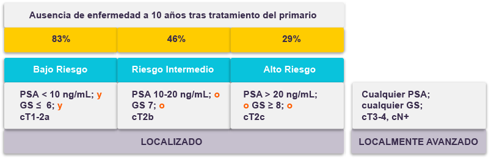
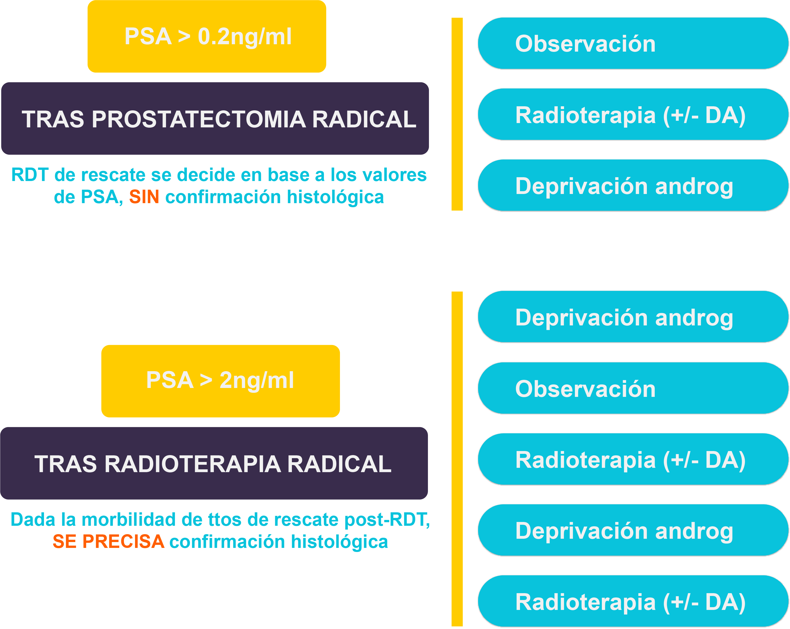

El cáncer de próstata en estadios precoces es la forma más frecuente de presentación, asociándose a un buen pronóstico, con tasas de supervivencia superiores al 90% a los 5 años. Sin embargo, un 30% de los tumores localizados evolucionarán en su historia natural a recaída bioquímica o local y el 10% evolucionan a enfermedad metastásica. Es fundamental tratar de identificar ese porcentaje de tumores potencialmente letales para dirigir los mayores esfuerzos terapéuticos.
Hasta hace poco más de una década, el 60-65% de los pacientes diagnosticados de cáncer de próstata eran diagnosticados con enfermedad diseminada. Gracias a la introducción del cribaje mediante métodos bioquímicos y técnicas de imagen, este porcentaje ha descendido marcadamente y en la actualidad, sólo el 10-15 % de los pacientes son diagnosticados en fase metastásica.
Habitualmente, la presencia de cáncer de próstata no produce síntomas (sólo un 8% de los casos), y la sintomatología miccional que puede existir es indiferenciable de la motivada por la hiperplasia benigna de próstata (HBP), altamente prevalente en esta población de edad avanzada. Esta sintomatología suele clasificarse en dos grupos :
disuria, disminución del calibre y flujo miccional, micción intermitente y prolongada, goteo postmiccional, tenesmo.
incontinencia por rebosamiento, polaquiuria, nicturia, urgencia miccional, dolor suprapúbico.
Se utiliza en práctica clínica un sistema para determinar la severidad de estos síntomas (sistema IPSS), que se evalúa mediante un cuestionario específico :
El diagnóstico de sospecha del cáncer de próstata se lleva a cabo habitualmente a partir del examen rectal y/o la determinación de niveles de PSA. El diagnóstico definitivo dependerá de la confirmación histopatológica a través de la biopsia prostática o la resección transuretral/prostatectomía en casos de hiperplasia benigna de próstata.
La mayor parte de los tumores de la próstata están localizados en la región periférica y serán detectados por el examen rectal cuando el volumen sea mayor o igual a 0.2mL. En aproximadamente el 18% de los casos el cáncer de próstata se diagnosticada exclusivamente por un tacto rectal sospechoso, independientemente del nivel de PSA. El tacto rectal sospechoso en pacientes con niveles de PSA ≤ 2ng/ml tiene un valor predictivo positivo del 5-30%. Además, un tacto rectal patológico se asocia a un riesgo elevado de Gleason alto y es indicación de realizar una biopsia.
El uso del PSA como marcador sérico revolucionó el diagnóstico del cáncer de próstata. Es una proteína órgano-específica pero no cáncer-específica. Por ello, podría estar elevado en casos de hiperplasia benigna de próstata, prostatitis y otras enfermedades benignas relacionadas. Como variable independiente, el valor de PSA es un mejor predictor de cáncer que el tacto rectal o la ecografía transrectal.
El valor de PSA es un parámetro continuo, en el cual el aumento de su valor se correlaciona de forma directa con un riesgo aumentado de cáncer de próstata. Sin embargo, muchos hombres tendrán cáncer de próstata a pesar de niveles bajos de PSA (la mayor parte tumores subclínicos e indolentes, pero también un porcentaje pequeño de tumores agresivos), estimándose de acuerdo a la tabla que aparece a continuación :
PSA level (ng/mL) |
Risk of PCa (%) |
Risk of Gleason ≥ 7 PCa (%) |
|---|---|---|
0.0-0.5 |
6.6 |
0.8 |
0.6-1.0 |
10.1 |
1.0 |
1.1-2.0 |
17.0 |
2.0 |
2.1-3.0 |
23.9 |
4.6 |
3.1-4.0 |
26.9 |
6.7 |
Riesgo de cáncer de próstata en pacientes con niveles bajos de PSA
Otros parámetros a tener en cuenta además del número absoluto del valor de PSA, serían :
Se calcula dividiendo el valor de los niveles séricos de PSA entre el volumen de la próstata estimado por ecografía transrectal. A mayor densidad de PSA, mayor incidencia de cáncer de próstata clínicamente significativo.
Existen 2 métodos para calcular la cinética del PSA :
La velocidad del PSA : el incremento absoluto anual en el valor de PSA sérico (ng/ml/año)
La velocidad de duplicación del PSA (PSA-DT) : mide el incremento exponencial en los niveles de PSA sérico a lo largo del tiempo.
Ambas medidas tienen un valor pronóstico claro, pero a nivel de diagnóstico su papel es limitado por diferentes interferencias (volumen prostático total, cirugías, diferentes intervalos en las determinaciones…).
Se utiliza para diferenciar la hiperplasia benigna de próstata del cáncer. Se aplica en pacientes con valores de PSA entre 4-10ng/ml y un tacto rectal negativo. En pacientes con un ratio PSA l/t <0.10 se detectó cáncer de próstata en biopsias en un 56% de casos, mientras con un ratio PSA l/t >0.25ng/ml se detectó cáncer de próstata en sólo un 8% de los casos. No está indicado en casos de PSA >10ng/ml o durante el seguimiento de un paciente con cáncer de próstata ya conocido.
Existen disponibles test comerciales que pretenden mejorar la estratificación del riesgo con el fin de reducir el número de biopsias innecesarias en pacientes con valores de PSA entre 2 y 10ng/ml, como son :
El Prostate Health Index (PHI) test, aprobado por la FDA que combina el valor de PSA libre y total con (-2) y la pro-PSA isoforma (p2PSA) y kalikreína 4n (4K)
El 4 kalikreína score test (4K), que mide el valor libre, intacto y total de PSA junto con la kallikrein-like peptidase 2 (hK2)
PCA3 marker Prostate cancer gene 3 (PCA3). Se trata de un RNA mensajero no codificante que es próstata-específico y que puede determinarse en orina tras masaje prostático durante la examinación rectal. El score aumenta depende del volumen del cancer de próstata, pero existe controversia sobre si es capaz de predecir el score Gleason de forma independiente, así como sobre su uso en la vigilancia active, encontrándose pendiente actualmente de validación. Actualmente, su indicación se restringe a la necesidad de biopsia repetida tras una biopsia inicial negativa.
La indicación de biopsia viene determinada por los niveles de PSA y/o un tacto rectal sospechoso. La edad, la comorbilidad y las consecuencias terapéuticas deben ser consideradas antes de realizar el procedimiento y discutidas con el paciente.
La estratificación del riesgo puede ser una herramienta fundamental para disminuir el número de biopsias innecesarias. Una elevación aislada de PSA no es indicación para realizar una biopsia de próstata inmediata. Deben confirmarse los niveles de PSA en una 2ª determinación unas semanas después y en el mismo laboratorio. El uso empírico de antibióticos en pacientes asintomáticos no debe utilizarse en estos casos.
La biopsia guiada por ecografía es actualmente el estándar, siendo el abordaje transrectal el más utilizado, aunque algunos urólogos prefieren el abordaje perineal. La detección de cáncer es comparable con ambos abordajes.
El número de muestras a recoger debe ser superior a 8, siendo las biopsias de 10-12 tomas las recomendadas. La biopsia debe ser bilateral y ya no se acepta la biopsia por sextantes al considerarse insuficiente. Se recomienda la administración de antibióticos profilácticos pre-procedimiento y el bloqueo anestésico periprostático guiado por ecografía.
Las complicaciones más frecuentes de una biopsia prostática son : hematospermia (37.4%), hematuria (14.5%), rectorragia (2.2%), prostatitis (1%), fiebre (0.8%), epididimitis (0.7%), y retención urinaria (0.2%).
Respecto al estudio anatomo-patológico, cada toma de biopsia debe ser reportada individualmente, incluyendo su localización y hallazgos histológicos, que incluiría :
• Tipo de carcinoma |
|
• Grado de diferenciación (sistema Gleason + ISUP, ver sección posterior) |
|
• Extensión del carcinoma en cada muestral (en mm o porcentaje) |
|
• Presencia de invasión de vesículas seminales |
|
• Presencia de invasión perineural |
|
• Presencia de infiltración linfovascular |
|
• Existencia de patrón cribiforme o intraductal |
En caso de que el resultado de la biopsia sea negativo, se repetirá la biopsia en las siguientes indicaciones:
• Elevación persistente del valor de PSA |
|
• Tacto rectal sospechoso |
|
• Presencia de proliferación acinar atípica (riesgo del 40%) |
|
• Presencia de extensa neoplasia intraepitelial prostática de alto grado (HGPIN, riesgo del 30%) |
|
• Presencia de carcinoma intraductal como hallazgo solitario (riesgo mayor del 90% de cáncer de próstata). Además, estudios recientes han relacionado la al carcinoma intraductal con tumores de perfil más agresivo |
|
• Hallazgos compatibles con cáncer de próstata en la resonancia magnética multiparamétrica |
Existen algunas pruebas que pueden realizarse en estos casos para intentar mejorar la selección de pacientes, encontrándose algunas de ellas pendientes de validación :
Name of test |
Test substrate |
Molecular |
FDA approved |
|---|---|---|---|
Progensa |
DRE urine |
IncRNA PCA3 |
yes |
PHI |
Serum |
Total, free and p2PSA |
yes |
4Kscore Test |
Serum/plasma |
Total, free, intact PSA, hK2 |
no |
ConfirmMDX |
Benign prostate biopsy |
Methylated APC, RASSF1 and GSTP1 |
no |
Otros métodos para alcanzar el diagnóstico de cáncer de próstata tras una biopsia inicial negativa y un riesgo pre-test elevado es la realización de una biopsia de saturación (>20 cores) o la biopsia guiada por RMN multiparamétrica.
En el cáncer de próstata localizado, es fundamental una correcta estratificación del riesgo que determine el impacto del tratamiento, con el fin de elegir la terapia más adecuada en cada caso. Es necesario minimizar las posibles secuelas derivadas del tratamiento que impacten en la calidad de vida de los pacientes afectos, ya que en muchos casos estos hombres fallecerán por otras causas.
Los factores más importantes que determinan el pronóstico en estadios precoces son :
Para determinar la extensión de la enfermedad se utiliza el sistema TNM, siendo la versión vigente la 8ª, publicada en 2017 :
T |
Primary Tumour |
|---|---|
TX |
Primary Tumour cannot be assessed |
T1 |
Clinically inapparent tumour that is not palpable |
T2 |
Tumour that is palpable and confined within the prostate |
T3 |
Tumour expends throught the prostatic capsule¹ |
T4 |
Tumour is fixed or invades adjacent structures other than seminal vesicles: external sphincter, rectum, levator muscles, and/or pelvic wall |
N |
Regional Lymph Nodes² |
NX |
Regional lymph nodes cannot be assessed |
N0 |
No regional lymph node metastasis |
N1 |
Regional lymph node metastasis |
M |
Distant Metastasis³ |
M0 |
No distant metastasis |
M1 |
Distant metastasis |
¹Invasion into the prostate apex or into (but not beyond) the prostate capsule is not classified as T3, but as T2.
²Metastasis no larger than 0.2cm can be designated pNmi.
²T2a to c only exist for clinical T2 (cT2). For pathological T2 they are no longer present in the 2017 TNM. Only pT2 exists.
³When more than one site of metastasis is present, the most advanced category is used. (p)M1c is the most advanced category.
El aspecto microscópico de un adenocarcinoma de próstata es muy variado. El patrón más frecuente está constituido por una proliferación microglandular, monoestratificada, por la ausencia de células basales, y con células neo plásicas (con prominentes nucleolos) con el fenotipo de célula secretora. La demostración de la pérdida de células basales (con marcadores específicos, tales como el 34-bE12 y la p63), así como la expresión de a-Methilacil-CoA Racemasa (AMARC), ayudan a identificar a los adenocarcinomas.
El progresivo crecimiento y desdiferenciación de esta neoformación puede desembocar en la fusión de las microglándulas con formación de áreas cribosas, masas sólidas e incluso nódulos con necrosis central, así como de cordones de células neoplásicas sin patrón glandular reconocible. Esta evolución es la que fue utilizada por Gleason para establecer los patrones de su clasificación de los grados del cáncer de próstata, por lo que el sistema de gradación de Gleason puede considerarse como un modelo evolutivo.
SUMA DEL 1er PATRÓN DOMINANTE Y DEL 2° PATRÓN DOMINANTE (en términos de volumen)
La puntuación de Gleason es el sistema más utilizado para graduar el adenocarcinoma de próstata. Sólo puede evaluarse en material de biopsia (biopsia con trocar o piezas quirúrgicas) y no deben utilizarse preparaciones citológicas. La puntuación de Gleason es la suma de los dos patrones más frecuentes (grado 1-5) de crecimiento tumoral observados y oscila entre 2 y 10, siendo 2 el menos agresivo y 10 el más agresivo. En la biopsia por punción, se recomienda incluir siempre el peor grado, aunque se encuentre en < 5 % del material de biopsia. Valores inferiores a 6 en la clasificación de Gleason no corresponderían a carcinomas. Así, existirían 7 patrones de gradación diferentes: 3+3, 3+4, 4+3, 4+4, 4+5, 5+4, 5+5 (de menor a mayor agresividad y peor pronóstico).
En 2014, en la conferencia de consenso de la Sociedad Internacional de Patología Urológica (ISUP), se adoptó un nuevo sistema de gradación basado en el sistema de clasificación de Gleason. Este nuevo sistema de gradación ha sido adoptada por la World Health Organization (WHO) para tumores genitourinarios en 2016.
El nuevo sistema de grupos de gradación no está designado para reemplazar el sistema de gradación de Gleason; de hecho está basado en la clasificación de Gleason y proporciona una estratificación del riesgo más precisa que la clasificación compuesta de Gleason actual. Los tumores son clasificados en 5 categorías basadas en su patrón primario y secundario de Gleason. El sistema de grupos de gradación fue validado en un análisis de 20.000 pacientes sometidos a prostatectomía radical en 5 centros académicos entre 2005 y 2014. Hubo un mayor riesgo de recidiva bioquímica con mayor grado tumoral.
Grupos de riesgo :
Grupo 1 : Gleason score 3+3 = 6
Grupo 2 : Gleason score 3+4 = 7
Grupo 3 : Gleason score 4+3 = 7
Grupo 4 : Gleason score = 8 (incluye 4+4 = 8, 3+5 = 8, o 5+3 = 8)
Grupo 5 : Gleason scores 9 o 10 (incluye 4+5, 5+4, o 5+5)
Actualmente se recomienda incluir en la práctica diaria la nueva clasificación de la ISUP después del grado de Gleason en el informe de Anatomía Patológica. Por ejemplo, “Adenocarcinoma de próstata, Gleason 7 (3+4) (ISUP grado 2)”.
Actualmente aún utilizamos factores analíticos y clínicos básicos para determinar el riesgo de recaída de los tumores de próstata localizado, y determinar la indicación de tratamiento.
La estratificación original del cancer de próstata en riesgo bajo, intermedio y alto fue publicada por D’Amico et al. en 1998. De acuerdo a este trabajo, el grupo de alto riesgo se define por la presencia de cualquiera de los siguientes parámetros: estadio clínico definido por tacto rectal T2c o superior, grado de Gleason de la biopsia mayor o igual a 8, y/o antígeno prostático específico (PSA) mayor o igual a 20 ng/ml.
Clasificación pronóstica de D. Amico
Actualmente existen diferentes nomogramas que nos ayudan a predecir el pronóstico del paciente con cancer de próstata localizada con el fin de seleccionar la major opción terapéutica: vigilancia activa, cirugía o radioterapia radical + hormonoterapia. La clasificación más utilizada es la publicada en las guías NCCN, que determina 6 grupos pronósticos en función de la extension TNM, el patron de Gleason y los niveles de PSA (última actualización v4.2018), para predecir la probabilidad de fallo bioquímico :
Grupo de riesgo |
Características clínco-patológicas |
|---|---|
Muy bajo riesgo |
T1, y |
Bajo riesgo |
T1-T2a, y |
Riesgo intermedio favorable |
T2b-T2c, ó |
Riesgo intermedio desfavorable |
T2b-T2c, ó |
Muy alto riesgo |
T3b-T4, ó |
El porcentaje de biopsias positivas ofrece una estimación del volumen tumoral prostático, y se ha incorporado recientemente a la clasificación de grupos de riesgo por su valor pronóstico.
Otro parámetro que cada vez tiene más importancia a la hora de valorar la agresividad del tumor, y es muy empleado en la práctica clínica es la cinética del PSA. Este parámetro puede determinarse mediante :
Nos ayuda a un diagnóstico diferencial entre hiperplasia benigna de próstata y carcinoma, cuando existan dudas de la indicación de una biopsia. A menor PSA libre, mayor riesgo de cancer de próstata. No se debe emplear en aquellos casos en los que el valor de PSA sea mayor de 10ng/ml o ya exista un diagnóstico de cancer de próstata. Estos son los puntos de corte que se emplean :
PSA f/t > 0.25 → 9-16% riesgo de cancer de próstata
PSA f/t < 0.10 → 49-55% riesgo d cancer de próstata
A mayor densidad, mayor riesgo de cancer de próstata
Incremento absoluto anual de PSA (ng/mL/año)
Incremento exponencial de PSA con el tiempo.
Para cálculo utilizamos una formula donde se recogen al menos 3 valores previos de PSA (MSKCC, http://nomograms.mskcc.org/Prostate/PsaDoublingTime.aspx)
Las guías americanas de Oncología Clínica (NCCN 2018) recomiendan con un nivel de evidencia 2A solicitar estudio de extensión con imagen a partir del grupo de pronóstico intermedio, tal como viene especificado en la tabla a continuación :
Risk group |
Clinical/pathologic features |
Imaging |
|---|---|---|
Very low |
T1c AND |
Not indicated |
Low |
T1-T2a AND |
Not indicated |
Favorable intermediate |
T2b-T2c OR |
Bone imaging: not recommended for staging |
Unfavorable intermediate |
T2b-T2c OR |
Bone imaging: recommended if T2 and PSA > 10 ng/mL |
High |
T3a OR |
Bone imaging: recommended |
Very High |
T3b-T4 OR |
Bone imaging: recommended |
Regional |
Any T, N1, M0 |
Already performed |
Metastatic |
Any T, Any N, M1 |
Already performed |
Adaptado de NCCN v4.2018. https://www.nccn.org/
Actualmente se está implantando el uso de PET-colina en pacientes con cancer de próstata de alto riesgo candidatos a realizar tratamiento local, para descartar posible diseminación metastásica.
El conocimiento de la genética del cáncer es fundamental para conocer la biología subyacente al crecimiento y migración del tumor, con el fin de implementar biomarcadores y estrategias terapéuticas que el día de mañana puedan aplicarse a la práctica clínica. Los avances en secuenciación genética han hecho posible conocer las alteraciones que caracterizan a los tumores, y que se asocian a eventos precoces (asociados al desarrollo) y tardíos (asociados a la diseminación metastásica).
En el adenocarcinoma de próstata, la histología más frecuente, la vía de andrógenos es la vía de señalización de la supervivencia en las células tumorales.
El primer evento genómico recurrente descubierto en cáncer de próstata fue un reordenamiento intracromosómico que provoca la fusión de TMPRSS2 con ETS. TMPRSS2 actuaría como un promotor hormonalmente regulado que activaría el factor de transcripción ETS. Este gen de fusión provoca la sobreexpresión de ETS (el más frecuente ERG) en respuesta a andrógenos, induciendo una respuesta de proliferación celular que activaría de forma constante la vía de señalización de los andrógenos.
La frecuencia de mutación de tumores de próstata es baja en relación a otros tumores epiteliales. El patrón de alteraciones se caracteriza por una baja tasa de mutaciones puntuales y una mayor frecuencia de ganancias y pérdidas de material genético. Todas las alteraciones parecen aumentar con la evolución del tumor a fase metastásica y de resistencia a castración.
Antes se creía que la evolución de mutaciones en cáncer de próstata seguía un modelo lineal, pero se ha comprobado que el cáncer de próstata es policlonal y presenta heterogeneidad tumoral.
A nivel genético, importantes diferencias se han observado entre los tumores de próstata localizados y el escenario de resistencia a la castración. Los estudios de secuenciación molecular en cáncer de próstata localizado muestran como hallazgo más prevalente la presencia de variantes de un solo nucleótido, en muchos casos en regiones no codificantes cuyo significado es incierto, sin encontrar ningún único gen con mutaciones más frecuentes del 10%. Sólo se encontraron mutaciones recurrentes en una frecuencia mayor del 2% en 6 genes: SPOP (8%), TTN (4.4%), TP53 (3.4%), MUC16 (2.5%), MED12 (2.3%) y FOXA1 (2.3%). La mutación del receptor de andrógeno en enfermedad localizada es tremendamente infrecuente, a diferencia de lo que se observa en los tumores que han progresado al tratamiento hormonal (escenario de resistencia a la castración).
Se han descrito como eventos fundamentales de la carcinogénesis en este tumor la presencia de mutaciones recurrentes o la presencia de inestabilidad genómica con roturas de doble cadena o cadena sencilla de ADN.
Estudios recientes han mostrado que estas alteraciones moleculares podrían tener un valor pronóstico, como por ejemplo la presencia de reordenamientos en la familia ETS y la amplificación de MYC, que se han asociado a una biología más agresiva. Dichos datos, han llevado a que estos análisis moleculares se vayan incorporando a test genéticos diagnósticos como PROLARIS u ONCOTYPE que pretenden ayudar a la toma de decisiones terapéuticas en este contexto.
El tratamiento del cáncer de próstata es complejo debido a que existen diversas opciones terapéuticas disponibles, que en muchos casos no han sido estudiadas mediante ensayos clínicos aleatorizados que nos permitan extraer conclusions firmes sobre el beneficio del uno sobre el otro. Otro punto a tener en cuenta es que la mayoría de estos pacientes tendrán un pronóstico excelente, y una supervivencia larga, falleciendo habitualmente por otras causas, por lo que minimizar el riesgo de secuelas de los tratamientos en este contexto debe ser una prioridad.
Las decisiones relativas al tratamiento en cada estadio clínico y grupo de riesgo de deben basarse en las guías clínicas disponibles a nivel nacional e internacional. Además, es fundamental utilizar estrategias multidisciplinares desde el comienzo (fundamentalmente en los casos con tumores de alto riesgo) a través de la participación en los comités específicos. Así, las guías europeas y españolas de Urología recomiendan :
Asesorar a los pacientes con cancer de próstata clínicamente localizado o de riesgo intermedio en un contexto interdisciplinar con un urólogo y un oncólogo radioterápico, teniendo en cuenta las opciones terapéuticas de prostatectomía radical con preservación nerviosa, braquiterapia en dosis bajas permanentes, radioterapia externa y vigilancia activa.
Comentar las opciones de tratamiento neoadyuvante y adyuvante para los pacientes con cancer de próstata de alto riesgo en el seno de un comité multidisciplinar preterapéutico de tumores para recomendar la opción terapéutica más adecuada, teniendo en cuenta todos los parámetros histopatológicos, funcionales e individuales de cada caso.
Documentar minuciosamente la guía clínica utilizada en el proceso de toma de decisiones cuando no sea posible adoptar una estrategia multidisciplinar.
La elección del tratamiento vendrá determinada por el grupo pronóstico que se haya determinado en el estadiaje del paciente :
Grupo pronóstico |
Tratamiento de elección |
|---|---|
Riesgo muy bajo |
• Vigilancia activa (si esperanza de vida > 10 años) |
Riesgo bajo |
• Vigilancia activa |
Riesgo intermedio favorable |
• Vigilancia activa |
Riesgo intermedio desfavorable |
• Prostatectomía radical + linfadenectomía pélvica |
Alto riesgo |
• Prostatectomía radical + linfadenectomía pélvica |
Muy alto riesgo |
• Prostatectomía externa +/- braquiterapia +/- ADT |
ADT= Terapia de deprivación androgénica
* En aquellos pacientes con una esperanza de vida inferior a 5 años podría valorarse en cualquiera de los grupos una actitud expectante basada prioritariamente en el control sintomático y descartando la opción de un tratamiento radical con intención curativa como veremos posteriormente (apartado 3.5.2)
La vigilancia activa es el tratamiento de elección en pacientes con una esperanza de vida mayor de 10 años. Los protocolos de vigilancia active como veremos en la sección 3.5.2 conlleva la necesidad de un seguimiento cercano para no perder la opción de un tratamiento curativo local, y puede asociarse en determinados pacientes a un importante nivel de ansiedad. En estos casos puede ofrecerse al paciente la posibilidad de un tratamiento radical.
El unico ensayo que compara estas 3 posibilidades de tratamiento es el Prostate Testing for Cancer and Treatment (ProtecT trial) llevado a cabo en Reino Unido, en el cual os pacientes eran aleatorizados a recibir vigilancia activa, prostatectomía radical o radioterapia radical. La mayoría de los pacientes incluidos cumplían criterios de muy bajo riesgo o bajo riesgo (el valor de PSA medio fue de 4.6ng/ml, 76% tenían un Gleason 6, y 76% tenían enfermedad T1c). En la publicación a 10 años, no se detectaron diferencias en supervivencia global entre los 3 grupos. Sin embargo, si se observó un aumento en el diagnóstico de metastasis y progresión clínica en el brazo de vigilancia activa. Se revisará con más detalle este ensayo en las secciones siguientes.
Existen técnicas ablativas como la crioterapia, los ultrasonidos de alta intensidad o la terapia fotodinámica, que se están estudiando en este contexto. Sin embargo, aún existe un seguimiento a largo plazo insuficiente como para recomendarlas como terapias estándar.
La vigilancia activa en este grupo de pacientes solo debe llevarse a cabo en casos seleccionados y tras una información extensa al paciente, dado que el riesgo de recaída es elevado, incluyendo la posibilidad de recaída metastásica en comparación con la administración de un tratamiento radical. Nunca se optará por esta opción en casos de riesgo intermedio desfavorable.
La prostatectomía radical con linfadenectomía pélvica es una opción en estos pacientes junto con la radioterapia radical. Se prefieren las técnicas minimamente invasivas para favorecer una recuperación más rápida. En el caso de existir factores patológicos de mal pronóstico en la pieza de la prostatectomía podría indicarse radioterapia adyuvante postoperatoria.
La radioterapia radical puede administrarse de forma externa o braquiterapia en casos que cumplan criterios (como veremos más adelante). Dado el elevado riesgo de recaída se recomienda la combinación del tratamiento con deprivación androgénica, aunque se discutirá en cada caso teniendo en cuenta potenciales riesgos/beneficios.
La prostatectomía radical con linfadenectomía pélvica es una opción para aquellos pacientes cuyo tumor no tenga signos de invasion a órganos/tejidos adyacentes. Aquellos pacientes con que presenten características adversas de mal pronóstico en el análisis anatomo-patológico de la pieza quirúrgica deberán recibir además radioterapia adyuvante postoperatoria +/- deprivación androgénica si presentan afectación ganglionar.
La radioterapia radical externa combinada con braquiterapia, o de forma aislada está indicada en este grupo de pacientes. La deprivación androgénica complementaria está recomendada. En secciones posteriores revisaremos la evidencia para elegir el tipo de tratamiento hormonal más apropiado y su duración.
El tratamiento con deprivación androgénica exclusiva podría ser una opción razonable para pacientes que no sean candidatos a un tratamiento local definitivo (como por ejemplo aquellos pacientes con una esperanza de vida corta).
Imprescindible en estos pacientes realizar un estudio adecuado de extension con pruebas de imagen para descartar afectación ganglionar o la existencia de metastasis dada la elevada probabilidad.
La prostatectomía radical con linfadenectomía pélvica o la radioterapia externa +/- braquiterapia con deprivación androgénica a largo plazo, podrían ser ambas opciones válidas de tratamiento en este grupo de pacientes. La evidencia en estos casos es limitada y está basada en series retrospectivas de pacientes. El análisis más extenso incluye 1809 pacientes, donde se observe que la mortalidad específica por cancer de próstata a 5 años era menor en los pacientes tratados con radioterapia externa + braquiterapia comparado con radioterapia externa sóla o prostatectomía radical.
En este grupo de pacientes especialmente es necesario la aplicación de protocolos multimodales. Al igual que en el grupo anterior, el tratamiento con deprivación androgénica exclusiva podría ser una opción para pacientes no candidatos a tratamiento radical del primario.
En el cancer de próstata localizado se presenta una situación excepcional, y es la elevada tasa de sobrediagnóstico de enfermedad subclínica e indolente, que nos plantea la posibilidad de diferir el tratamiento en determinados casos. Esta situación viene avalada por las diferencias observadas en incidencia y mortalidad en cancer de próstata y la elevada tasa de diagnósticos en necropsies de pacientes fallecidos por otras causas.
Con el fin de reducir el riesgo de un tratamiento excesivo en este subgrupo de pacientes, se han propuesto dos estrategias de tratamiento conservador: actitud expectante y vigilancia activa.
También conocido como “tratamiento guiado por los síntomas”’, este término se acuñó en la era previa al cribado mediante PSA (antes de 1990) y hacía referencia al tratamiento conservador del cancer de próstata hasta la aparición de progresión local o sistémica, en cuyo momento se trataba al paciente de forma paliativa mediante una resección transuretral de la próstata (RTUP) y otros procedimientos para aliviar la obstrucción de las vías urinarias, así como con hormonoterapia o radioterapia para el tratamiento paliativo de las metástasis.
Los pacientes seleccionados para realizar actitud expectante serán aquellos que nunca van a ser candidatos a un tratamiento radical y en los que se desestima una opción de rescate curativo.
También conocido como ‘seguimiento activo’, es una opción para pacientes con carcinoma de próstata subclínico e indolente, detectado precozmente mediante elevación de PSA o como hallazgo incidental, y que presentan una baja carga tumoral. Dicha aproximación consiste en una vigilancia periódica con la opción de proceder a un tratamiento curativo radical diferido.
El objetivo de la vigilancia activa es seleccionar por su evolución a aquellos pacientes que puedan progresar y evitar las complicaciones derivadas del tratamiento en aquellos pacientes que es poco probable que progresen. Por ello, en la estrategia de vigilancia activa es muy importante identificar pacientes que tengan una baja probabilidad de progresión de enfermedad a lo largo de la v ida, y por otra parte establecer un plan de monitorización periódica de niveles de PSA y de la evolución de la histopatología del tumor.
Los pacientes candidatos a este tipo de aproximación son aquellos que definimos como pacientes de bajo riesgo por los siguientes criterios :
• Gleason menor o igual a 6 |
|
• PSA igual o inferior a 10 ng/ml |
|
• Estadio T1c o T2a |
Epstein et al, determinaron además unos criterios clínicos para definir o predecir que un paciente tiene enfermedad mínima o escasamente significativa :
• Gleason score menor o igual a 6 |
|
• Densidad de PSA < 0,15 |
|
• Una afectación total menor de 3 mm |
|
• Afectación de menos de un tercio de los cilindros o btenidos en biopsia |
|
• Afectación por carcinoma < 50% en cada cilindro |
Sin embargo, se ha descrito que hasta un 8% de tumores que cumplen estos criterios podrían no ser órgano-confinados de acuerdo con hallazgos postoperatorios.
De acuerdo con las guías americanas (v4.0 NCCN 2018) se debería ofrecer un protocolo de vigilancia activa a cualquier paciente con cáncer de próstata de pronóstico muy bajo (con una recomendación mayor para aquellos pacientes con una esperanza de vida inferior a los 20 años) y en pacientes con bajo riesgo y favorable riesgo intermedio con esperanza de vida inferior a 10 años.
Choo, Klotz y cols. fueron los primeros en describir un protocolo de VA prospectivo (JCO 2005). Seleccionaron a 331 pacientes con un estadio clínico T1c o T2a, un PSA ≤ 10 ng/ml y una puntuación de Gleason ≤ 6 (PSA ≤ 15 y puntuación de Gleason ≤ 7 [3 + 4] en pacientes mayores de 70 años). Tras una mediana de seguimiento de 8 años, la supervivencia global fue del 85 %, mientras que la supervivencia específica de la enfermedad y la supervivencia sin metástasis fueron del 99 %. El valor de la mediana del tiempo de duplicación del PSA fue de 7 años; en el 42 % de los pacientes fue de 10 años y en el 22 %, < 3 años. El 33 % de los pacientes se sometieron posteriormente a un tratamiento radical: el 20 % por un tiempo de duplicación del PSA < 3 años, el 5 % por progresión de la puntuación de Gleason en las biopsias de repetición y el 10 % por preferencia del paciente. Desde entonces diferentes series prospectivas (aunque con ligeras diferencias en los criterios de selección) han arrojado resultados similares.
El estudio más reciente y con un seguimiento a más largo plazo que evalúa un protocolo de vigilancia activa es el ensayo PROTEC UK (Hamdy et al, NEJM 2016), en el cual se aleatorizaron 250.000 hombres entre PSA de cribaje o no. Entre los pacientes cribados se detectaron más de 2000 casos de cáncer de próstata, de los cuales 1643 entraron en el estudio. Una tercera parte fueron tratados con prostatectomía, otra tercera parte con irradiación externa y el tercio final mediante un protocolo de vigilancia activa. Los objetivos principales del estudio fueron muerte por cáncer de próstata y supervivencia libre de metástasis. Tras 10 años de seguimiento, la mortalidad específica por cáncer de próstata fue baja en los 3 grupos: 8 fallecidos en el grupo de vigilancia activa, 5 en el grupo que se trató con cirugía y 4 fallecidos en el grupo tratado con radioterapia, siendo estas diferencias no estadísticamente significativas.
La propuesta que hacemos a continuación recoge los consensos de NCCN y otros autores. El esquema de seguimiento consensuado por el NCCN y otros autores, es :
• PSA cada >6 meses al menos que esté clínicamente indicado |
|
• Tacto rectal cada >12 meses al menos que esté clínicamente indicado |
|
• Biopsia prostática >12 meses al menos que esté clínicamente indicado |
|
• Se realizará RMN multiparamétrica en caso de elevación de PSA con biopsia prostática negativa (alta sospecha de cáncer de próstata) |
Sin embargo, existen criterios diferentes para definir la progresión del cáncer, siendo los más aceptados :
• El tiempo de duplicación del PSA con un valor umbral comprendido entre ≤ 2 y ≤ 4 años |
|
• Progresión de la puntuación de Gleason a ≥ 7 en biopsias de repetición, a intervalos de 1-4 años |
Estos indicadores no están bien validados. En la actualidad, resulta imposible hacer recomendaciones basadas en datos científicos sobre el momento de intervención en pacientes con una esperanza de vida prolongada. Por esta razón se necesitan más estudios que definen el momento óptimo de la intervención radical.
Vigilancia activa |
Watchful waiting |
|
|---|---|---|
Intención de tratamiento |
Curativo |
Paliativo |
Seguimiento |
Calendario predefinido |
Específico para cada paciente |
Técnicas |
Tacto rectal, PSA, Biopsia,RMN |
No definido |
Esperanza de vida |
> 10 años |
< 10 años |
Objetivo |
Disminuir la toxicidad del tto sin comprometer la supervivencia |
Disminuir la toxicidad del tratamiento |
Indicación |
Subgrupo muy bajo-bajo riesgo |
Todos los estadios |
El tratamiento quirúrgico del cáncer de próstata consiste en una prostatectomía radical (PR), que supone la extirpación de toda la próstata entre la uretra y la vejiga, así como la resección de ambas vesículas seminales junto con tejido adyacente suficiente para obtener un borde negativo. A menudo, este procedimiento se acompaña de una linfadenectomía pélvica bilateral. En varones con cancer de próstata localizado y una esperanza de vida ≥ 10 años, el objetivo de una PR por cualquier abordaje ha de ser la erradicación de la enfermedad, al tiempo que se mantiene la continencia y, siempre que sea posible, la potencia sexual. No existe un umbral de edad para la PR y no debe descartarse este procedimiento basándose únicamente en la edad. Por el contrario, una comorbilidad cada vez mayor aumenta considerablemente el riesgo de fallecer por causas no relacionadas con el cancer de próstata. Y por ello la estimación de la esperanza de vida es muy importante al asesorar a un paciente acerca de la cirugía.
Young aplicó la PR por primera vez a principios del siglo XX siguiendo un abordaje perineal. En 1982, Walsh y Donker describieron la anatomía del complejo venoso dorsal y de los paquetes vasculonerviosos, lo que se tradujo en una disminución significativa de la pérdida de sangre y mejoró las tasas de continencia y potencia.
La PR retropúbica y la prostatectomía perineal se llevan a cabo a través de incisiones abiertas, aunque más recientemente se ha desarrollado la PR radical laparoscópica mínimamente invasiva y la PR con asistencia robótica.
En una revisión sistemática detallada de la bibliografía se compararon los resultados de la PR retropúbica y la PR por laparoscopia/asistencia robótica, objetivando que las técnicas menos invasivas se asociaban a una menor tasa de hemorragia, de requerimientos analgésicos y una menor estancia hospitalaria, aunque los datos disponibles no fueron suficientes para demostrar la superioridad de ningún abordaje quirúrgico en cuanto a resultados funcionales y oncológicos. De hecho, esta tasa de complicaciones parece estar directamente relacionada con la experiencia del equipo quirúrgico.
Respecto al tratamiento quirúrgico de los ganglios linfáticos, la linfadenectomía regional es realizada habitualmente durante el acto quirúrgico de la PR por vía abdominal o laparoscópica. La finalidad es la de realizar una estadificación adecuada del cáncer de próstata y no se plantea con finalidad terapéutica. Se limita a la región anatómica conocida como fosa obturatriz circunscrita por la vena ilíaca externa, conducto femoral y la bifurcación de la arteria ilíaca común. Actualmente, debido a la alta capacidad de predicción de los nomogramas específicos, la tendencia es a no realizarla en los pacientes que presentan PSA menor de 10 ng/ml y grado de Gleason menor de 7, ya que tendrán una probabilidad de afectación ganglionar inferior al 7%. En casos de mayor riesgo de afectación linfática, está indicada la realización de una linfadenectomía extendida donde se ha podido comprobar hasta un 20% de ganglios afectos fuera del territorio anatómico habitual.
(diferencia en la tasa de complicaciones)
Se han publicado dos ensayos clínicos aleatorizados realizados en EE.UU (Wilt TJ, The Prostate Cancer Intervention Versus Observation Trial (PIVOT) Oncology 1997) y en Suecia (Holmberg L, NEJM 2002) que comparan la prostatectomía radical con la opción más conservadora de vigilancia.
El ensayo clinico americano mostró que la prostatectomía reducía significativamente la mortalidad específica por cáncer de próstata (7.1% vs. 13.6% a los 8 años de seguimiento, p=0.02), aunque no había diferencias significativas entre la cirugía y la vigilancia en términos de supervivencia global (22.0% vs. 28.3% a los 8 años de seguimiento, p=0,31). La reducción de las metástasis en el grupo de prostatectomía radical no fue estadísticamente significativa hasta los 8 años de seguimiento (13.4% vs. 27.3%, p=0.03). El estudio ‘Prostate Cancer Intervention Versus Observation Trial (PIVOT) fue diseñado por el Department of Veterans Affairs and National Cancer Institute de EE.UU. para comparar la cirugía con la vigilancia tanto en términos de supervivencia como de calidad de vida. Tras 731 pacientes incluidos y 12 años de seguimiento no se observaron diferencias significativas en supervivencia (47% fallecidos de los pacientes tratados con RP vs 49.9% fallecidos en vigilancia, p=0.22). En el análisis por subgrupos se observó una tendencia a la reducción de muerte en aquellos pacientes con valor de PSA > 10ng/ml (p=0.04) y en aquellos con tumores de intermedio/alto-riesgo (p=0.07). Posiblemente el tiempo de seguimiento en este estudio fue insuficiente para lograr suficientes eventos para ver diferencias.
Event |
Patients |
|---|---|
no. (%) |
|
Any |
60(21.4) |
Pneumonia |
2(0.7) |
Wound infection |
12(4.3) |
Urinary tract infection |
7(2.5) |
Sepsis |
3(1.1) |
Deep-vein thrombosis |
2(0.7) |
Stroke |
1(0.4) |
Pulmonary embolism |
2(0.7) |
Myocardial infarction |
3(1.1) |
Renal failure or dialysis |
1(0.4) |
Bowel injury requiring surgical repair |
3(1.1) |
Additional surgical repair |
7(2.5) |
Bleeding requiring transfusion |
6(2.1) |
Urinary catheter present > 30 days after sugery |
6(2.1) |
Death |
1(0.4) |
Other |
28(10.0) |
Resultados ensayo aleatorizado PIVOT tras 12 años de seguimiento (NEJM 2012). Se incluyeron pacientes con ≤75 años, esperanza de vida ≥ 10 años, estadios T1-T2NxM0 con PSA < 50ng/ml de cualquier grado, diagnosticados en los 12 meses previos. A la izquierda curvas Kaplan Meier de supervencia específica por cáncer de próstata. A la derecha vemos las complicaciones reportadas en los 30 días posteriores a la intervención.
En 2014 se publicaron los resultados actualizados del estudio sueco (Bill-Axelson, NEJM) tras más de 20 años de seguimiento. De 347 hombres incluídos en el brazo de la cirugía 200 habían fallecidos (63 por cáncer de próstata), y de 348 incluidos en el brazo de seguimiento 247 fallecieron (99 por cancer de próstata), por lo que se detectó un RR de 0.56 (95% IC 0.41 - 0.77; p=0.001). El número de pacientes intervenidos necesarios para prevenir una muerte fue de 8. En el análisis por subgrupos el beneficio de la cirugía podría ser mayor en pacientes jóvenes (RR 0.45) y con intermedio riesgo (RR 0.38), aunque tambien se asoció la PR con una disminución en el riesgo de metástasis en pacientes de mayor edad (RR 0.68; p=0.04). De acuerdo con este estudio, el beneficio podría ser menor para pacientes con tumores de alto riesgo.
En este estudio se presentan además las tasas de mortalidad específica por cancer de próstata de acuerdo a 3 grupos pronósticos :
Bajo riesgo : PSA level < 10ng/ml y Gleason score < 7
Alto riesgo : PSA >20ng/ml o Gleason>7
Riesgo intermedio : Aquellos pacientes que no cumplían criterios de bajo o alto riesgo
Resultados del estudio aleatorizado prospectivo sueco tras seguimiento de 23.2 años, donde se observa una disminución estadísticamente significativa para la prostatectomía radical en el riesgo de muerte por cáncer de próstata.
La linfadenectomía pélvica tiene valor para determinar el estadiaje del tumor, por lo que podría ser omitida en pacientes con enfermedad de bajo riesgo. La óptima extensión de la linfadenectomía es incierta, y deben considerarse las potenciales complicaciones en cada caso. No se ha demostrado un impacto en supervivencia d ela linfadenectomía pélvica en ensayos clínicos aleatorizados.
En cáncer de próstata de alto riesgo existe un debate abierto entre la eficacia de la prostatectomía radical vs la radioterapia + deprivación hormonal. En un meta-analisis (Petrelli F, Clin Genitour 2014) se identificaron 17 estudios (1 aleatorizado, 16 retrospectivos), observando los autores un beneficio en supervivencia para la cirugía vs la radioterapia. Sin embargo, el estudio tiene importantes sesgos en la selección de la pacientes en cada grupo terapéutico, y en el estudio aleatorizado existe una infra-representación de los pacientes tratados con radioterapia (381 vs 56 casos), por lo que es difícil extraer conclusiones.
Actualmente, en espera de resultados sólidos, debería evaluarse cada caso de forma sistemática en un comité multidisciplinar.
Adaptado de Petrelli, F.,et al. 2014. Radical Prostatectomy or Radiotherapy in High-Risk. Prostate Cancer: A Systematic Review and Metaanalysis. Clinical Genitourinary Cancer, 12(4), 215–224
Las principales complicaciones de la prostatectomía radical en cáncer de próstata son la impotencia, la incontinencia urinaria, la estenosis uretral, hernias inguinales.
• La impotencia sexual es una de las principales secuelas del tratamiento y su recuperación va a depender de la edad del paciente en el momento de la cirugía, la función sexual previa y el tipo de intervención. La prostatectomía con preservación de las bandeletas neurovasculares minimiza esta complicación de la cirugía, con tasas de conservación de la erección en torno al 76-86%. Existe tratamiento farmacólogico (inhibidores de la fosfodiestarasa-5 como el sildenafilo) o inyecciones en los cuerpos cavernosos para ayudar a estos pacientes a mantener la erección. |
|
• La incontinencia urinaria completa es muy infrecuente, sin embargo la mayoría de los pacientes experiencian algún grado de incontinencia urinaria tras la PR, aumentando esta probabilidad con la edad. En los primeros 2 meses tras la cirugía la probabilidad es del 52%, descendiendo al 15% a partir del año, y al 7% a partir de los 2 años. En estos casos se indica rehabilitación de suelo pélvico, o en casos más extremos la implantación de esfínteres artificiales. |
|
• La estenosis uretral está descrita en un 8% de los pacientes intervenidos. En caso de persistir los síntomas el tratamiento es el abordaje endoscópico mediante dilataciones o resecciones. |
|
• La aparición de hernias inguinales tras cirugía se ha minimizado con la implantación de cirugías menos invasivas, estimándose actualmente en un 2-5%. |
Recientemente, se han desarrollado nuevas técnicas para el tratamiento focal del cáncer de próstata. Se trata de técnicas menos invasivas que actúan de forma dirigida sobre el tejido tumoral, sin afectar al resto del tejido prostático, y que se han desarrollado en pacientes con tumores pequeños y en estadios precoces. Estas nuevas terapias son las siguientes :
• Crioterapia |
|
• HIFU |
|
• Ablación intersticial mediante laser |
|
• Termoterapia prostática |
|
• Terapia fotodinámica |
|
• Electroporación |
Actualmente son técnicas que están en fase de experimentación y en las Guías Europeas de Urología no están recomendadas como alternativas terapéuticas a la cirugía por lo que su grado de recomendación es menor.
La radioterapia externa ha sido la modalidad de tratamiento más empleada para el tratamiento de cáncer de próstata con radiaciones ionizantes durante muchos años. Las mejoras técnicas recientes tanto en la planificación del tratamiento como en la administración del mismo (actualmente el estándar es la IMRT o radioterapia de intensidad modulada) , han hecho mejorar el índice terapéutico de una forma sustancial. Debido a la historia natural de esta enfermedad y al tiempo de seguimiento necesario, los datos que se analizan en la actualidad han sido generados con técnicas que casi podemos considerar del pasado. Por lo tanto, aún se espera obtener mejores resultados con la tecnología que se emplea hoy en día.
Uno de los inconvenientes puede ser la falta de información anatomopatológica, al no disponer de la pieza quirúrgica para llevar a un estudio completo. No obstante, los nomogramas actuales permiten optimizar la selección y clasificación de pacientes. Los volúmenes de irradiación se planifican en función del riesgo de afectación capsular o de las vesículas seminales.
Existe un estudio aleatorizado (ProtecT trial) diseñado para comparar en enfermedad localizada el papel de la cirugía frente a la radioterapia y frente a la vigilancia. Los resultados de este estudio tras un seguimiento a 10 años se publicaron en 2016 (Hamdy et al, NEJM) revelaron tasas muy bajas de recaída. Se incluyeron 1643 pacientes, y se detectaron 17 muertes específicas por cáncer de próstata (8 en el grupo de vigilancia, 5 en el grupo de cirugía y 4 en el grupo de radioterapia), sin encontrarse diferencias estadísticamente significativas en supervivencia entre los 3 grupos (p=0.48). Sí se observó un aumento en el desarrollo de metástasis y en el tiempo a la progresión de la enfermedad en el grupo de pacientes bajo vigilancia frente a los pacientes intervenidos o tratados con cirugía radical.
En el estudio ProtecT (NEJM 2016) se publicaron los resultados a 10 años de eficacia de la PR vs radioterapia vs seguimiento en pacientes con cáncer de próstata localizados. No se observaron diferencias en supervivencia global. Se encontraron diferencias en tiempo a la progresión e incidencia de metástasis a favor de la cirugía y la radioterapia (RTP), desfavoreciendo al grupo de pacientes bajo vigilancia. No se reportaron diferencias significativas entre RTP o PR
Radioterapia + ADT vs Radioterapia : Beneficio para el tto combinado
Bolla et al (NEJM 1997) llevaron a cabo un estudio prospectivo aleatorizado comparando la irradiación externa con la irradiación (50Gy en pelvis + 20Gy sobre próstata) + tratamiento con análogos de LHRH (goserelina) en pacientes con tumores localmente avanzados (durante 3 años). Tras un seguimiento de 45 meses y 401 pacintes incluidos, se observó un beneficio en supervivencia global a favor de la combinación (79% vs 62%, p=0.001), con un 85% de pacientes libres de enfermedad a los 5 años vs 48% en el brazo de la radioterapia sóla (p < 0.001).
Pilepich publicó en 2005 los resultados de un estudio americano (RTOG 85-31) prospectivo en pacientes T3-T4 o N+, a los que se aleatorizó a recibir radioterapia + goserelina vs radioterapia sólida con indicación de goserelina a la recaída. Se incluyeron 977 pacientes y tras una mediana de seguimiento de 10 años se observó un beneficio en supervivencia para la combinación 49% vs. 39%, (p = 0.002), así como beneficio en la incidencia de metástasis 24% vs. 39% (p < 0.001) y mortalidad específica por cáncer de próstata 16% vs. 22% (p = 0.0052).
Radioterapia + ADT vs ADT : Beneficio para el tto combinado
Varios estudios han evaluado la eficacia de la combinación de tto hormonal con radioterapia en la enfermedad de alto riesgo, siendo el fase III de Widmark et al (Lancet 2009) el estudio más relevante. Se incluyeron 875 pacientes (T3; 78%; PSA < 70; N0; M0) y se les aleatorizó a recibir tto hormonal (3 meses de bloqueo hormonal completo seguido de flutamida) vs el mismo tratamiento + radioterapia (70Gy, 24 pac recibieron 74Gy). Tras un seguimiento de 10 años se observó un 39.4% de mortalidad específica por cáncer de próstata en el brazo exclusivamente hormonal vs 29.6% en el brazo de la combinación (RR 0.68), con una disminución en el riesgo de recaída bioquímica que favorecía al brazo con radioterapia. Tras 5 años de seguimiento, la sintomalogia urinaria, rectal y la disfunción sexual fueron ligeramente superiores en el brazo de la combinación
Resultados del ensayo Fase III escandinavo (Widmark, Lancet 2009), en el que se compara el tto hormonal exclusivo vs la combinación de tto hormonal con radioterapia. A la izquierda se observa la tabla de efecctos secundarios. A la derecha las curvas Kaplan Meier que determina beneficio en el tiempo al desarrollo de recidiva bioquímica y a la supervivencia específica por cáncer de próstata.
Radioterapia + ADT largo-plazo vs Radioterapia + ADT corto-plazo : Beneficio para tto ≥ 2años
Bolla et al (NEJM 2009) evaluaron la combinación con radioterapia + supresión hormonal androgénica (2.5 años con análogos) vs tto con supresión hormonal corta (6 meses) en un ensayo aleatorizado con diseño para demostrar no inferioridad. Se incluyeron 970 hombres y tras una mediana de seguimiento de 6.4 años la supervivencia global a 5 años favoreció al tto hormonal prolongado (mortalidad 19.0% vs 15.2%, HR 1.41, p=0.42 para no inferioridad).
Irradiación pélvica + prostática vs irradiación prostática
En 2007 se publicaron los resultados preliminares del estudio GETUG-01 para valorar el beneficio y la toxicidad de la irradiación de las cadenas ganglionares pélvicas en pacientes con tumores localizados. Se incluyeron 444 pacientes (T1b-T3, N0 pNx, M0) y se les aleatorizó a tratamiento con radioterapia sobre pelvis (46Gy) + próstata (70Gy) vs radioterapia sobre próstata exclusivamente (70Gy). Se permitió neoadyuvancia con tto hormonal durante 6 meses en el grupo de alto riesgo. Tras una mediana de seguimiento de 42.1 meses, no se observaron diferencias en supervivencia libre de progresión o supervivencia global en ambos grupos.
Las tasas de complicaciones también son bajas con las técnicas de tratamiento actuales, y dependerán de la dosis de radiación y el volumen a tratar. A continuación se describen la reacciones adversas más frecuentes :
• La toxicidad urinaria es la más frecuente, que experimentarán hasta un 50% de los pacientes durante el tratamiento, incluyendo aumento de la frecuencia miccional, disuria y/o urgencia miccional. Los síntomas habitualmente se recuperan 4 semanas tras completar la terapia. Los efectos tardíos son relativamente infrecuentes, estimada en un 1%. |
|
• La toxicidad gastrointestinal aguda durante la radioterapia puede manifestarse como proctitis o enteritis con unas tasas entre el 5-30%. Los síntomas más frecuentes incluyen dolor abdominal, diarrea, tenemos, urgencia rectal y hematoquecia. Es rara la aparición de incontienencia fecal, úlcera o perforación. La incidencia de toxicidad grado 3 se estima en 1-5% en los diferentes ensayos. |
|
• La disfunción sexual se estima en torno al 30%, dependiendo de la condición previa y del tipo de tratamiento (la toxicidad ha disminuido con la llegada de la IMRT). |
|
• Se ha descrito un aumento mínimo en la aparición de segundos tumores: cáncer de vejiga y rectal, con un riesgo de muerte que se asemeja a la mortalidad perioperatoria de una prostatectomía radical. |
La braquiterapia consiste en la implantación temporal o permanence de semillas radiactivas en la glándula prostática para poder administrar dosis más elevadas de radiación directamente a la próstata, minimizando la radiación sobre los tejidos sanos adyacentes. Como contraindicaciones relativas a la administración de este tratamiento estarían un tamaño prostático aumentado (>50-60g) y la pre-existencia de síntomas urinarios.
En la braquiterapia de baja tasa se implantan 75-125 semillas radiactivas (de unos 5mm) de forma permanente en la próstata, guiado por ecografía, que emiten radiación durante varios meses. Estaría indicada en hombres con cáncer de próstata de bajo riesgo (estadio ≤T2a, Gleason ≤6 y PSA < 10ng/ml) y en casos seleccionados de pacientes con tumores de riesgo intermedio con factores pronósticos favorables.
Se utiliza también en enfermedad de alto riesgo, en combinación con radioterapia externa.
En la braquiterapia de alta tasa se utilizan catéter transperineales que son insertados en la próstata, y se trata a los pacientes en 1-4 sesiones de 24-40 horas, retirándose el catéter una vez administrado el tratamiento. La principal ventaja de la radioterapia de alta tasa es que se pueden administrar dosis 1000 veces más elevadas que con la técnica clásica. En pacientes de alto riesgo, dada la rápida eliminación de la radiación se combina el tratamiento con radioterapia externa.
Tras un tratamiento localizado radical, el seguimiento se realiza fundamentalmente en base a la clínica del paciente, el valor de PSA y el tacto rectal (este se puede obviar si el PSA es indetectable).
Se recomienda un seguimiento más intensivo el primer años, con controles a los 3 – 6 – 12 meses, y despúes se continuará con revisiones cada 3 ó 6 meses (en función del riesgo) durante 5 años, para continuar posteriormente con revisiones anuales.
La recidiva del cáncer puede ser diagnosticada bioquímicamente con la detección de PSA, localmente ante la presencia de una induración palpable o a distancia con la positividad de las pruebas de imagen.
La recidiva bioquímica o elevación de PSA tras un tratamiento radical de la enfermedad localizada se define según diferentes criterios en función del tratamiento localizado recibido :
Tras una prostatectomía radical deberían existir niveles indetectables de PSA, al no persistir células de la próstata. Se estima que a las 4-6 semanas de la intervención las concentraciones séricas de PSA han desaparecido. Cualquier detección posterior se interpreta como persistencia o recidiva bioquímica y antecede a la progresión clínica del cáncer de próstata. Se acepta como definición de recidiva bioquímica post-cirugía la presencia de un PSA ≥0.2ng/ml confirmado por una 2ª determinación consecutiva.
Tras la radioterapia prostática puede persistir alguna viabilidad del tejido prostático. Aunque no se conocer el valor óptimo post-radioterapia, sí que sabemos que un nadir de PSA < 0,5 ng/mL se ha asociado con mejor pronóstico. En los pacientes radiados, puede tardarse incluso 3 años hasta alcanzarse el nadir. Se acepta como definición de recidiva bioquímica post-radioterapia la presencia de un PSA ≥2ng/ml sobre el nadir.
La elección de los tratamientos en pacientes que experimentan recidiva bioquímica aislada ha de estar basada en la esperanza de vida de los pacientes, el riesgo y las toxicidades de los tratamientos de rescate propuestos. El PET colina puede ser útil en estos pacientes para descartar enfermedad a distancia, de cara a plantear un tratamiento radical de rescate.
RESUMEN MANEJO RECIDIVA BIOQUÍMICA. Adaptado de NCCN 2018. La radioterapia de rescate post-prostatectomía ha demostrado ser más eficaz en pacientes con niveles de PSA más bajos (punto de corte 0.5ng/ml) y mayor PSADT, por lo que ambos parámetros han de ser considerados a la hora de indicar este tratamiento. DA= deprivación androgénica
RADIOTERAPIA ADYUVANTE | RADIOTERAPIA DE RESCATE |
|---|---|
• Administración de RDT post-prostatectomía en pacientes con alto riesgo de recidiva local por factores de mal pronóstico (pT3a-b, R1, GS alto) |
• Administración de RDT en el lecho prostático, incluyendo ganglios linfáticos, tras recidiva bioquímica exclusiva (sin metástasis a distancia) |
• Con PSA indetectable |
• Mayor tiempo para recuperación de cirugía |
• Entre 4-6 meses tras Cx (se inica tras control de continencia) |
Tras prostatectomía, en pacientes con factores de riesgo de recidiva local (R1, extensión extracapsular y/o invasión de vesículas seminales, GS 8-10) con PSA indetectable, las DOS OPCIONES SON VÁLIDAS: RDT adyuvante Vs monitorización y administrar RDT de rescate en recidiva bioquímica (PSA < 0,5ng/mL).